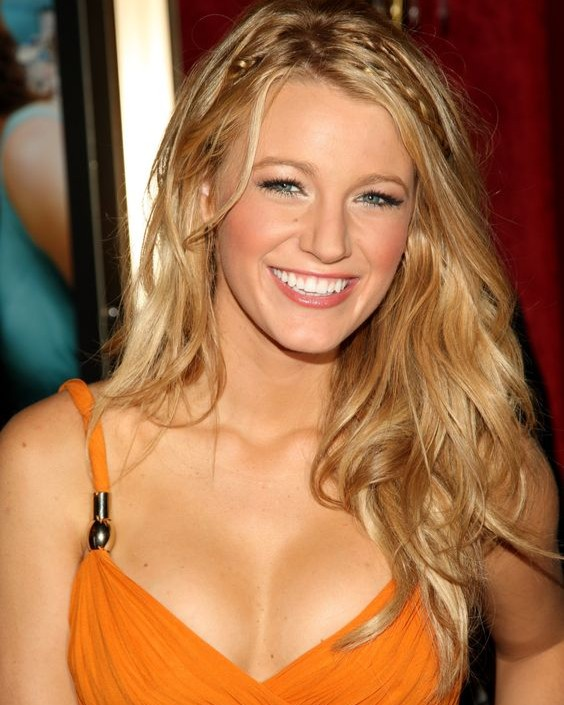
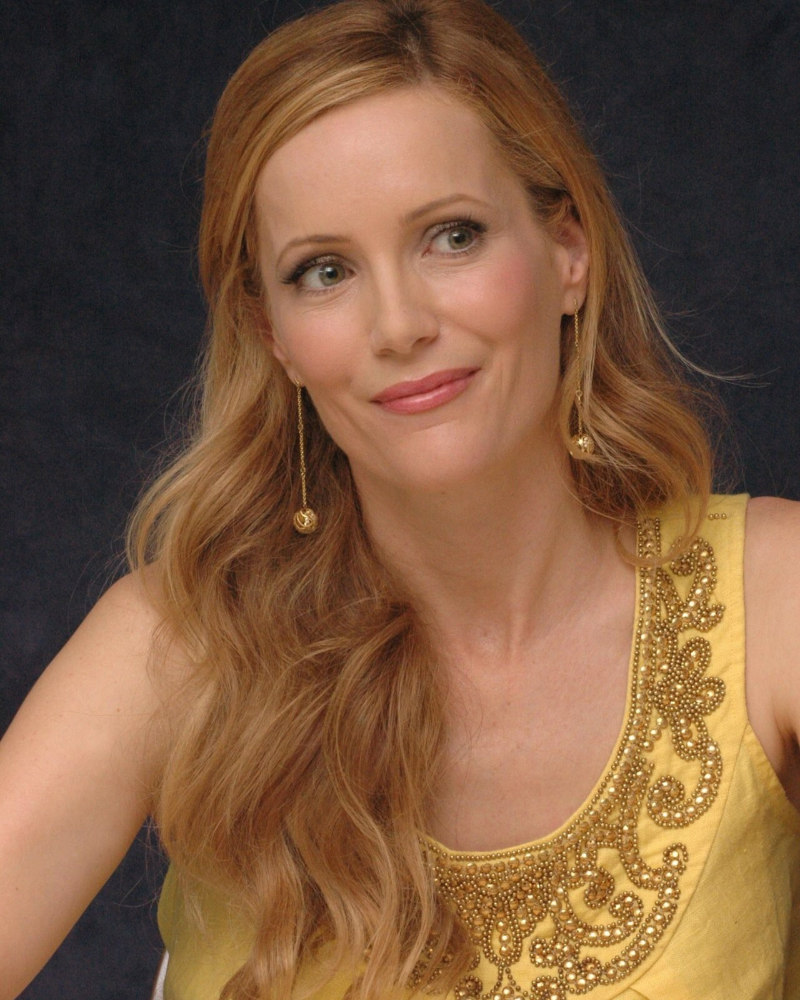
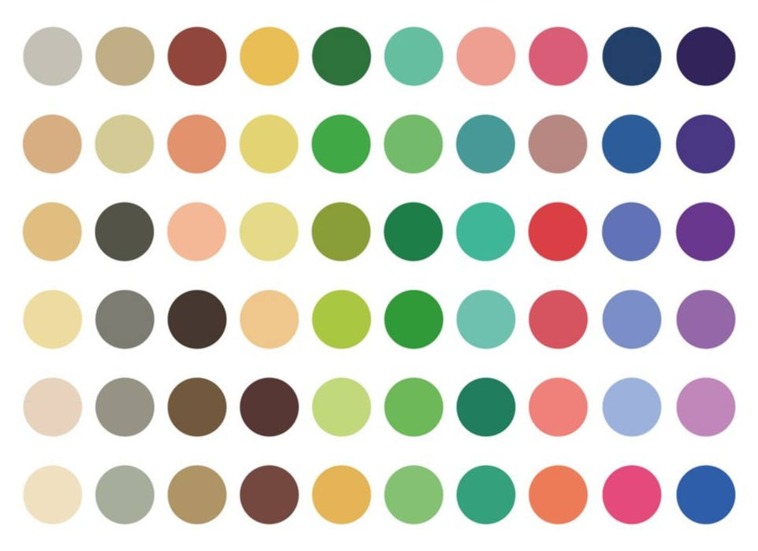
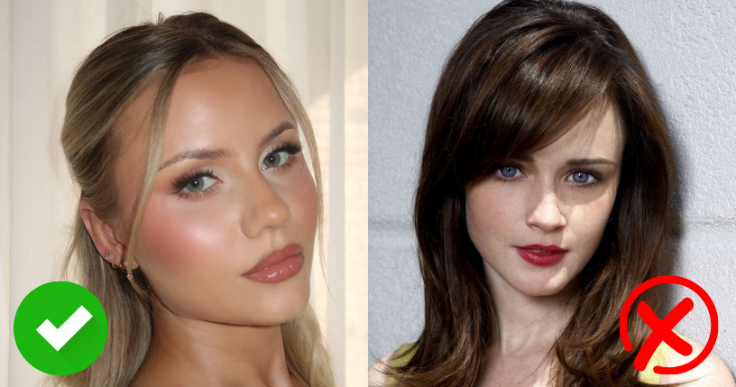
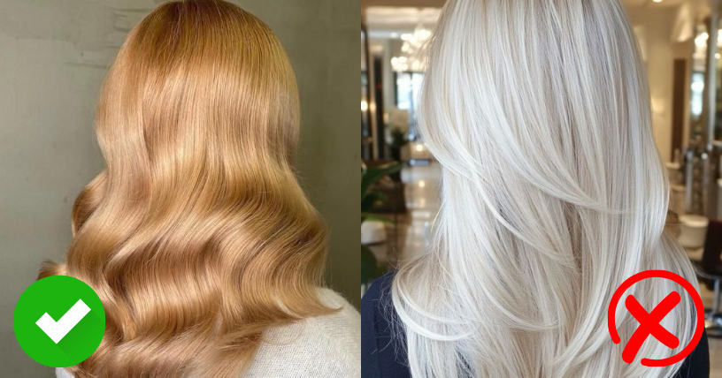
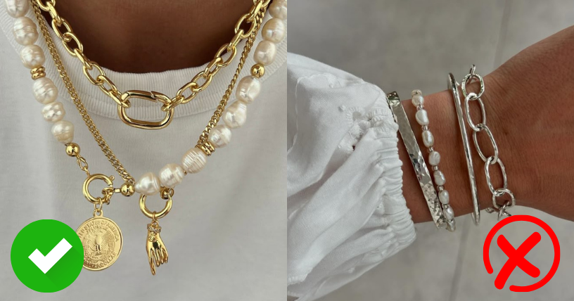

Características generales de la estación Primavera
- Subtono de piel cálido: tonalidades doradas o "amarillas".
- Cabello claro o medio: desde rubio dorado hasta castaño claro con reflejos cálidos. También pueden tener tonos pelirrojos suaves.
- Ojos claros y brillantes: verde claro, azul celeste, turquesa o avellana dorado. Se caracterizan por tener una mirada luminosa.
- Contraste suave a medio: la diferencia entre el color de piel, cabello y ojos es moderada, lo que da una apariencia armónica y suave.


Tipos de primavera
Dentro de esta estación, existen subcategorías que ayudan a afinar aún más la elección de colores.
1- Primavera clara:
- Rasgos muy suaves y piel muy clara.
- Paleta clara, cálida y ligeramente apagada.
- Evitan los tonos intensos o demasiado oscuros.
2- Primavera cálida:
- Subtono dorado muy marcado.
- Ojos y cabello con mucho pigmento cálido.
- Se ven favorecidos por colores vibrantes y dorados.
3- Primavera brillante:
- Alto contraste con mucha claridad y brillo.
- Ojos muy definidos y piel luminosa.
- Toleran algunos colores más saturados que otras Primaveras.
Paleta de colores ideal para Primavera
La paleta Primavera se compone de tonos cálidos, claros y vivos. Los colores deben acompañar la luminosidad natural
de esta estación sin opacarla ni sobrecargarla. Algunos ejemplos ideales:

Se recomienda evitar colores fríos, oscuros o muy apagados, como negro, gris humo, borgoña o azul marino
profundo, ya que pueden endurecer las facciones o hacer que la piel se vea pálida.
Maquillaje para Primavera
- Base: tonos beige o marfil con subtono cálido.
- Rubor: durazno, coral claro, rosado cálido.
- Sombras: dorado suave, champagne, cobre claro, verde agua.
- Labiales: coral, rosa melón, salmón, nude cálido.

Evitar los tonos fríos como los violetas, fucsias o rojos azulados.
Coloración de cabello para Primavera
- Rubios dorados o miel
- Castaños claros con reflejos caramelo
- Cobrizos suaves o fresa claro

Evitá los tonos ceniza, platinados o negros, ya que pueden crear un contraste muy fuerte y quitarle calidez a tu rostro.
Accesorios para Primavera
- Perlas cremosas
- Piedras en tonos cálidos como citrino, coral, topacio o ámbar
- En tonos dorados

Los metales como la plata pueden verse demasiado fríos y contrastar negativamente con la piel.